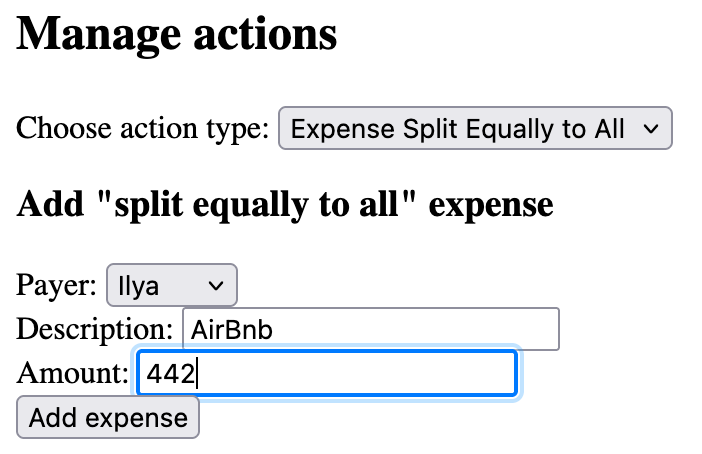
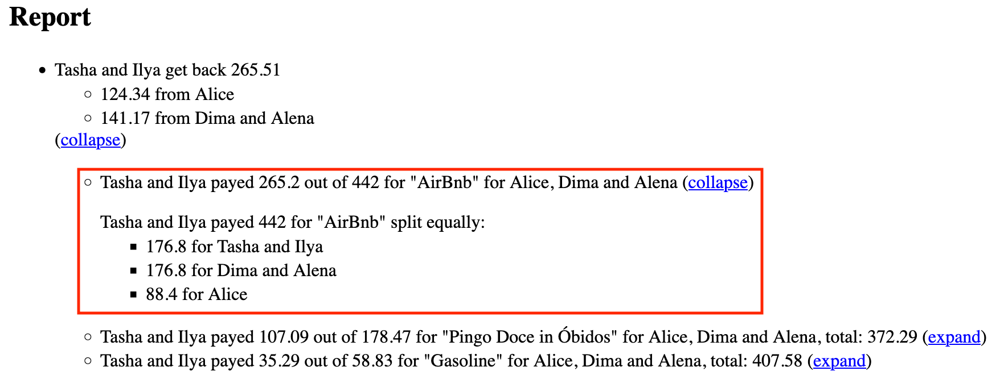
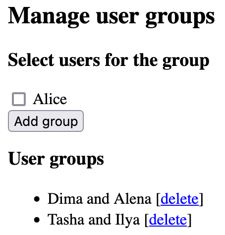
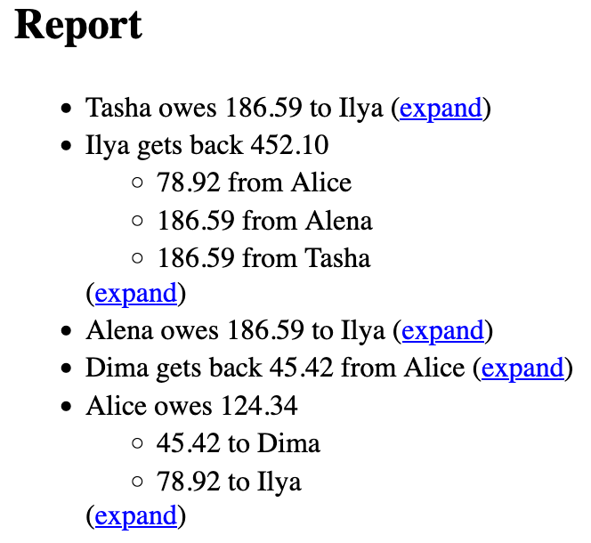
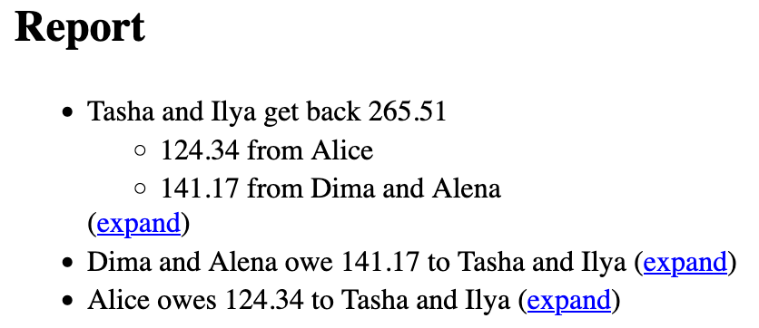
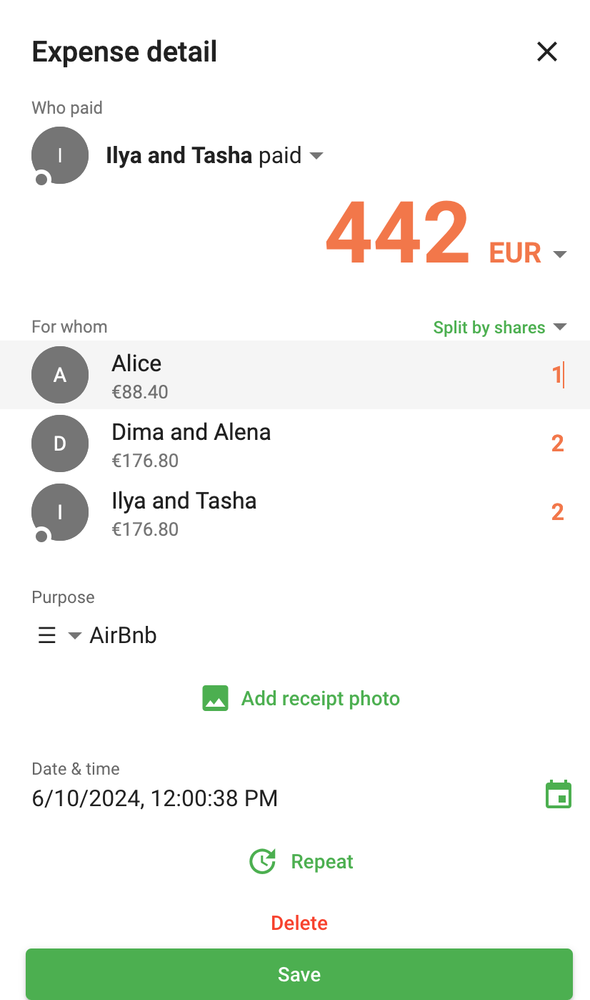
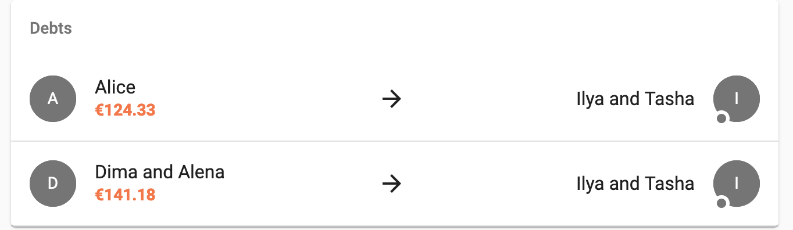
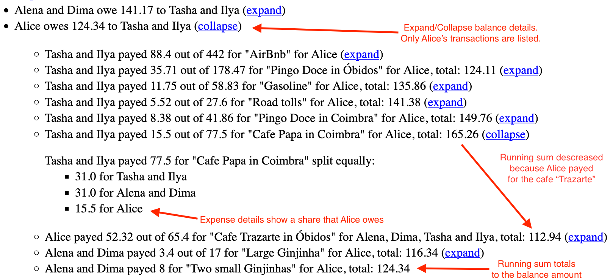

Posted on September 8, 2024
I’ve been traveling with friends recently. Traveling with a group of friends incurs shared expenses:
- Someone pays for accomodation.
- Spliting a dinner cheque becomes less convenient for a larger company.
- There may be some other shared expenses, such as fuel for a car, tolls, or museum tickets bought by one person for everybody to save time.
To manage this, I built The Money Split Application and I use it for myself. The application allows to track shared expenses, to record who paid for an expense, and to specify how to split the expense. It then calculates the fewest transactions needed to settle debts, so everyone pays once at the end of a travel.
The sample deployment with pre-populated sample data is available for readers to experiment with.
While Splitwise and Settle Up cover the same use case, they lack a couple features I want. And my application is open-sourced, ad-free, and will not push premium upgrades while the user executes a core use case.
I didn’t finish the backend yet. So for now, expenses are stored in the browser, requiring one person to log all entries.
Basic usage
The simplest way of sharing an expense is “Split Equally to All” when everyone pays an equal share.
Here is a sample Airbnb expense from one of our trips:

The report shows that the expense is indeed split equally with groups of two paying twice as much:

The data in these screenshots is available in the the sample deployment.
Other ways to split expenses include:
- “Split Equally”—among specific users, not all.
- “Itemized Split”—assigning specific amounts to each person.
I encourage readers to explore the “Choose action type” dropdown under “Manage actions” in the sample deployment or in the application itself to discover ways to split expenses and record payments.
The rest of the post covers use cases, existing applications, the motivation for this project, and other higher-level topics.
Use cases
Group travel
As discussed, when traveling with friends, we want one person to pay for an expense, and we want to capture all expenses with The Money Split Application to:
- Save time by avoiding separate payments,
- Minimize payments needed to settle debts after the trip.
Recurring activity
In 2013, I often went to lunch with coworkers, and we used Splitwise to avoid splitting bills or paying each other back. The person who owed the most would pay for that day’s lunch.
As a group doing a recurring activity together together, we want the person with the highest debt to pay the next bill, so that we
- Don’t split the bill, and
- Avoid money transfers.
Fund a start-up
Another use case is funding a project. For example, two start-up founders—one pays for hosting and ads, the other for video production to promote the project to potential customers.
As founders, we want to track expenses with the application to:
- Ensure balanced spending.
- Avoid direct transfers.
These are just a few examples from my experience, but many other scenarios are possible.
Existing Applications
Splitwise and Settle Up are great for tracking shared expenses if you’re willing to pay $40 or $18 per year respectively. Both offer Android, iOS, and web versions, but they lack couple features:
Additionally, the free versions aggressively push premium upgrades, especially Splitwise, which:
- Forces users to watch a 1-minute ad to save each transaction.
- Limits free users to 5 transactions per day on Android.
In contrast, The The Money Split Application is open-source, ad-free, and never pushes premium upgrades during core tasks.
User groups support
The Money Split Application supports user groups to simplify “split equally” expenses when certain people have joined expenses.

As shown in the Basic usage section:
- Groups of two pay double compared to individuals, and
- Groups “owe” and “lend” together.
Compare these reports, but remember, debts between “Dima and Alena” or “Tasha and Ilya” don’t matter when settling. Which is simpler?
Without groups:

With groups:

Without groups, Alice must make two payments to Dima and Ilya. But with groups, the app minimizes Alice’s transactions by recognizing joined expenses of grouped users.
Readers can recreate these screenshots by deleting groups under “Manage user groups” in the sample deployment.
“Split by shares” is the closest approximation to this feature in both Splitwise and Settle Up. For example in Settle Up you can create “joined users” by naming the account “X and Y” and assigning 2 shares to joint users in each transaction:

However, this must be done for every transaction. While in The Money Split Application, user groups are set up once, and the application knows how to “split equally to all” with respect to group sizes without a need to specify “split by shares” each time.
Debt balance traceability
Here is another screenshot from Settle Up showing debts accrued from the same input as in the sample.

But why does Alice owe €124.33? You’d need to check the “Transactions” tab, find all her transactions, and sum them up to figure out.
In The Money Split Application, the report is expandable by user and expense. Clicking “expand” near “Alice owes 124.34 to Tasha and Ilya” entry shows only her transactions with a running total of the balance:

And clicking “expand” near the specific expense like “Cafe Papa in Coimbra” reveals how it was split and Alice’s share.
This debt balance traceability helps catch input errors.
Personal motivation
I get a lot of joy from using software I’ve written outside of work, though most of it consists of small command-line utilities or one-off scripts. For example, when I was buying a car recently, I wrote a small program to score car ads based on price, mileage, year, and engine power.
I want to take my pet projects to the next level by making them accessible to others. However, as a backend engineer, I lack the frontend skills to quickly create user interfaces for my utilities.
The main motivation for this project was to practice frontend development.
When I tried Splitwise after a long break, I was surprised by how agressively it now pushes a user to buy a premium version. I saw this as an opportunity to practice, and I decided to create a free, open-source alternative without ads that doesn’t hinder users in performing core tasks. Also, I wanted to add some features that are missing in existing applications to make it convenient for me to use.
Being a Haskell geek, my secondary motivation for the project was to understand the concept of Functional Reactive Programming (FRP) by using it. So, I implemented the project using Reflex FRP.
Technical details
Client-side heavy project
The project is client-side heavy, with all logic and validations handled on the client. This allows for offline use and makes the UI fast, with instant validation and updates.
One “extreme” consequence of the offline support is that the project can be deployed in a client-only mode without a backend at all, as it is now. The JavaScript client is distributed via AWS CloudFront with an S3 bucket origin
However, this setup can lead to asynchronous editing conflicts. For example, what happens if one user deletes an expense offline while another updates it?
There are several answers to this question, each with pros and cons. Weighting those is an interesting distributed systems design discussion, but I would leave it for another time. I will cover it in a future post once the backend for The Money Split Application is implemented.
Written in Haskell
The project is implemented in Haskell using Reflex FRP and is built with Nix. Haskell is compiled to Javascript using GHCJS.
This implies typical pros and cons of Haskell development which I’m not ready to discuss in this post, but rather refer to this Scale by the Bay talk.
One visible consequence of this choice is rather large size of the generated Javascript. The application “weights” 7.5 megabytes after minification by the Javascript Closure Compiler. For reference, Instagram’s web version loads 16.4 MB of JavaScript.
Future plans
The immediate plans for the project are:
Backend
The most important next step is implementing the backend, as collaborative editing isn’t possible without it.
The current workaround—one person enters all expenses—works for some cases, like group travel. For example, I now track all shared expenses when I travel with friends. However, it’s not suitable for others, like recurring activity. For example, if the disignated bookkeeper in one vacation, then he can’t track who paid for the last lunch.
Multiple workspaces
Currently, only one workspace is available for tracking expenses and payments. It’s not possible to manage expenses for different groups simultaneously. For instance, one can’t track coworker meals and, at the same time, track trip expenses with friends. The user must delete all actions to start over.
Support for multiple workspaces is an important feature to implement.
Improve UX
I’m not an expert in UX and am looking to collaborate with a UX engineer to improve the interface.
Also, I plan to explore Material Tailwind to improve the UI and make the web version more mobile-friendly.
I don’t have immediate plans to create native iOS or Android applications. But I will create a WKWebView/WebView based distributions for iOS and Android once the UX is improved and the interface is mobile friendly.
Dreams
If the project gains users, I may consider adding useful paid features, but I will never limit or interfere with the core free functionality.